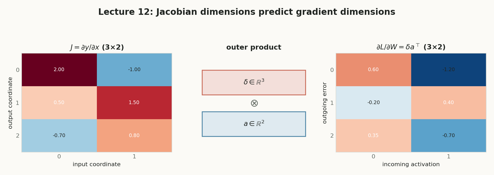
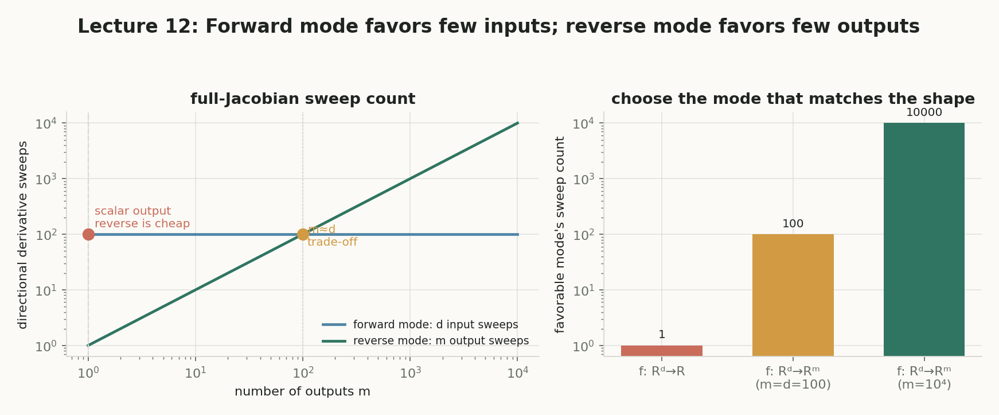
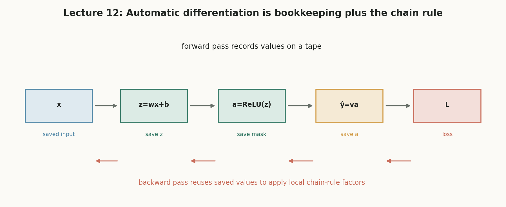
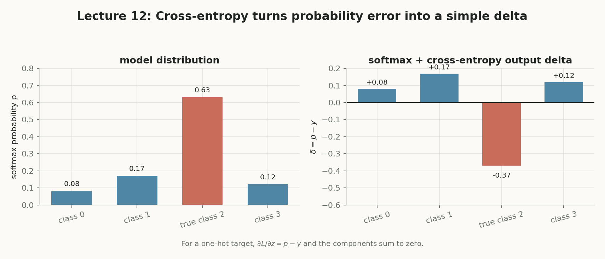
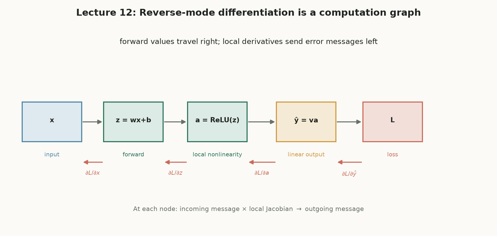
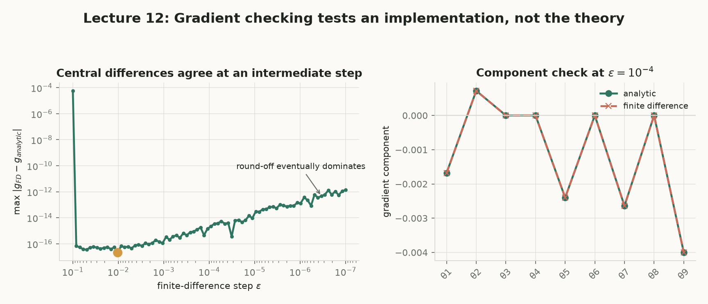

反向传播：
让 300 万个权重知道
谁该为错误负责
第 11 讲给出了模型（多层神经网络与前向传播）。第 12 讲不引入新模型，只回答一个问题：训练所需的梯度 $\nabla_W\ell$ 到底怎么高效地算出来。这一页是原讲义的附属互动版：每一个第一次出现的概念都给出定义、图示与动手实验；所有实验都只需要拖动滑杆。
§0课程地图：这一讲在哪里，概念如何互相咬合
先把“位置”看清楚。第 11 讲给了模型，第 12 讲负责造出训练模型所需的梯度，第 13 讲讨论有了梯度之后训练为什么仍然难。下图可以点击跳转。
§1从一个工厂开始：错误需要“分摊”，梯度就是分摊系数
原讲义用木板工厂开篇。想象三道工序：切割 → 打磨 → 上漆，最后产品尺寸错了 5 mm。是谁造成的？你不可能重新只做其中一道工序再全测一遍（太贵），于是需要一套“责任分摊”规则。
工厂版本：追溯错误intuition
损失函数 $\ell$ 对某个参数 $w$ 的偏导数 $\dfrac{\partial \ell}{\partial w}$。它回答：“只把 $w$ 增大一点点，损失会向哪个方向、以多快变化？”把所有参数的偏导数排成一个向量就是梯度 $\nabla_W\ell$。
SGD 的每一步更新都要用它：$W\leftarrow W-\eta\,\nabla_W\ell$。没有梯度，权重不知道往哪个方向改。工厂里“责任分摊”就是梯度：下游工序的导数会乘进上游工序的责任里。
梯度来自损失函数（§2）→ 通过链式法则计算（§5）→ 最终交给优化器使用（§12）。这一讲的名字“反向传播”只是计算梯度的方法，不是梯度本身。
§2SGD 只需要一样东西：损失对权重的梯度
第 11 讲的训练目标是 $W^*=\arg\min_W \sum_i \ell(W;x_i,y_i)$。SGD 每看到一批数据就沿负梯度方向迈一小步。所以整个第 12 讲的中心任务浓缩成一行：gradient_W loss(W; x, y)。
🔧 一维实验：梯度是切线的斜率，SGD 沿“下坡方向”走
一个标量 $\ell(W;x,y)\ge 0$，衡量“当前预测与目标差多少”。损失越小通常代表预测越好。标量这一点非常关键：反向传播的高效性正来自“很多参数 → 一个损失标量”。
用（一小批）样本估计梯度，再按 $W\leftarrow W-\eta\,\nabla_W\ell$ 更新权重。SGD 是优化算法，它只消费梯度，不负责计算梯度。
3 个权重可以手算，300 万个必须系统化。反向传播就是把“手算链式法则”变成可在任意深度网络上逐层执行的算法。
§3最小网络：一个输入、一个隐藏单元、一个输出
先玩原讲义的“最小网络” $x\to z=w'x \to v=\mathrm{ReLU}(z)\to f=w\,v\to \ell=(f-y)^2$。拖动滑杆，再按下“逐步反向传播”，看梯度消息如何一步一步从损失传回两个权重。
§4激活函数的导数：反向路上的“闸门”
反向传播要把信号穿过激活函数，因此必须先会求 $\varphi'(z)$。Sigmoid 与 ReLU 是两种相反的性格：一个处处平滑但会“饱和”，一个几乎处处斜率恒定但会在 0 处“断电”。
Sigmoid：平滑但会饱和
ReLU：激活即通路，关闭即断路
ReLU 在 $z=0$ 处不可导。实现中必须固定一个值（常用 $\mathrm{ReLU}'(0)=0$ 或 $1$），并让解析梯度与梯度检查使用同一个约定。本页所有实验约定 $\mathrm{ReLU}'(0)=0$。
§5链式法则：反向传播的全部“数学引擎”
反向传播不是新数学。它只是把微积分的链式法则在计算图上高效执行。先看单变量版，再升级到向量版。
若 $a=g(x)$，$b=h(a)$，$c=q(b)$，则“远端的 c 对最初的 x 的变化率”等于沿途每一小步变化率之积：
🔗 动手实验：改变函数与 x，观察“沿途局部导数相乘”
§6多变量怎么办：Jacobian 与 VJP
单变量链式法则只适用于“中间量是一个数”。神经网络里中间量几乎都是向量（一层的激活有几十上百维）。这一节回答三件事：Jacobian 是什么、它怎么用、以及为什么反向传播实际只算它的“半边乘积”（VJP）而不把整个矩阵构造出来。
向量值函数 $f:\mathbb R^n\to\mathbb R^m$ 的全部一阶偏导排成 $m\times n$ 矩阵，第 $i$ 行第 $j$ 列是输出分量 $f_i$ 对输入分量 $x_j$ 的导数：
白话：每个格子回答一个问题——“输入第 j 个分量动一点点，输出第 i 个分量会动多少”。所以 Jacobian 不是神经网络里新发明的魔法，只是把 m×n 个标量导数整齐地摆成一张表。
当中间量是向量时，单变量链式法则没法写。Jacobian 把“导数”从数升级成表，多变量复合函数的导数就是两张表相乘：
网络的一层就是向量到向量的函数：$z^{(l)}=W^{(l)}v^{(l-1)}$。要算“损失对本层输入的梯度”，理论路径就是写出这一层的 Jacobian，再乘上游传来的误差向量。
损失 $\ell$ 是标量，所以上游消息 $\nabla_u\ell$ 是一个向量。链式法则只要求：
这个“矩阵转置乘向量”就是 VJP。
路线 A（概念路线）：先把完整 Jacobian 按定义一格格求出来，再做乘法。它适合 2×3 这样的小表，用来理解，不适合真正实现。
路线 B（实现路线）：直接从上游向量 v 出发，按分量求和：
注意上式只是把“转置乘向量”展开成标量写法：对第 j 个输入分量，把所有输出对它的敏感度 × 对应上游消息加起来。两个本讲反复出现的特例：
🧮 动手实验：VJP = Jᵀ × 上游误差
一个上游向量 $v$ 与局部 Jacobian 的乘积 $J_f(x)^\top v$。它是反向传播每个节点的标准动作：把“上游损失消息”翻译成“对本地输入的消息”。
① 目标形状决定一切：我们最终要的是 $\nabla_x\ell$，它和输入 x 同形状，是一个向量，不是 m×n 矩阵；链式法则给出的恰好就是 $J^\top v$。
② 损失是标量：标量损失在每一步只产生一个上游向量 v，而不是一个“上游矩阵”。所以反向传播永远在做“矩阵 × 向量”，得到的仍是向量。
③ 省内存、可融合：显式构造 J 要存 $m\times n$ 个数；只保留上游 v 和结果 $\nabla_x\ell$ 只需要 $m+n$ 个数。神经网络的层通常还有结构（线性、逐元素），VJP 能直接利用这些结构计算，不必先拼出大矩阵。
📷 课件原图：Jacobian 维度与误差-激活外积

§7误差信号 δ：反向传播真正传递的东西
本讲最重要的一个对象，没有之一。δ 把“损失”翻译成“对某一层每个单元线性输入 z 的敏感度”。
对第 $l$ 层的线性输入（pre-activation）$z^{(l)}=W^{(l)}v^{(l-1)}$，定义
两个式子没有矛盾：$z=w'x$ 是单个神经元的特例，$z^{(l)}=W^{(l)}v^{(l-1)}$ 是整层神经元的一般写法。
逐分量看：第 $l$ 层第 $j$ 个单元把上一层送来的每个分量 $v_i^{(l-1)}$ 分别乘上自己的权重 $W_{j,i}^{(l)}$，再加起来：
和最小网络对照：最小网络只有 1 个输入、1 个隐藏单元、没有 bias，此时 $W^{(l)}$ 退化成 $1\times1$ 矩阵 $[w']$，$v^{(l-1)}$ 就是 $[x]$，于是 $z=[w'][x]=w'x$。
带 bias 的完整写法：把 $v^{(l-1)}=[a_1,\dots,a_d,1]^\top$ 增广一个常数 1，把 $W^{(l)}$ 的最后一列存 bias，则一行矩阵乘法同时完成“加权求和 + 加 bias”：$z_j^{(l)}=\sum_i W_{j,i}^{(l)}a_i+b_j$。
分量含义：“只把第 j 个单元的 pre-activation $z_j^{(l)}$ 增加一点点，最终损失的一阶变化率”。它不是预测误差 $f-y$ 本身，而是预测误差穿过后续所有层和损失函数之后到达这里的总敏感度。
🛠 为什么对 z 定义，而不是对 v？—— 因为权重梯度一步就到手
每个权重 $W_{j,i}^{(l)}$ 只通过 $z_j^{(l)}$ 影响后续。链式法则拆开：
把元素排回矩阵，得到外积（outer product）：
$\delta_j^{(l)}$ 说“接收端第 j 个单元该改多少”，$v_i^{(l-1)}$ 说“发送端第 i 个单元这次送来了多少”。两者相乘，就是连接它们的那条权重应承担的变化。
🎨 外积实验：拖动 δ 与 v，观察梯度矩阵如何形成
第三列是 bias 的梯度：增广激活 $v^{(l-1)}=[a^{(l-1)};1]$ 里永远有常数 1，所以 bias 梯度恒等于 δ。
① 横向展开：与本层输入做外积 → 得到整张权重梯度；② 纵向传播：乘 $\big(\bar W^{(l+1)}\big)^\top$ 与 $\varphi'(z^{(l)})$ → 成为前一层的 δ。后面 §8–§9 的全部算法只是这两个动作的重复。
§8起点与递推：输出层 δ、隐藏层 δ
反向传播像多米诺骨牌，需要第一张牌（输出层 δ），也需要一张牌撞倒下一张的规则（隐藏层递推）。
它由损失函数决定，不由网络结构猜出。若输出层无激活：$\delta^{(L)}=\nabla_f\ell$；若有激活 $\psi$：$\delta^{(L)}=\nabla_f\ell\odot\psi'(z^{(L)})$。
$\odot$ 是逐元素乘法（Hadamard product）：两个同形状的向量按位置一一相乘，结果仍是同形状向量。它不是点积（不会得到一个标量），也不是矩阵乘法（不要求行列对齐）。
在这行公式里，逐元素展开就是：
为什么这里要逐元素乘：每个输出单元 $k$ 都只经过自己的激活函数 $\psi(z_k^{(L)})$。单元 k 的误差信号只需要乘自己那一个导数 $\psi'(z_k^{(L)})$；单元 1 的导数不该乘到单元 2 上。逐元素乘法恰好表达了“各乘各的”。
软最大值 + 交叉熵的漂亮结论见 §14：$\delta^{(L)}=p-y$。
某个隐藏单元影响了下一层很多单元，因此要把这些影响沿连接权重加回来，再乘本层激活导数：
其中 $\odot$ 是逐元素乘法（Hadamard product）：两个同形状向量对应位置相乘。$\bar W^{(l+1)}$ 是去掉 bias 列后的权重。
形状自检：$(\bar W^{(l+1)})^\top\in\mathbb R^{d_l\times d_{l+1}}$ 乘以 $\delta^{(l+1)}\in\mathbb R^{d_{l+1}}$ 得到 $\mathbb R^{d_l}$，正好是本层宽度。转置的作用是把“下一层的责任”按连接权重反向汇聚回本层每个单元。
§9完整沙盘：两层网络的前向 + 反向 + 梯度矩阵
把 §7 的 δ 和外积、§8 的起点与递推拼成完整算法。网络：2 输入 → 2 个 ReLU 隐藏单元 → 1 输出，平方损失。先按“逐步播放”，再随意改权重观察梯度如何变化。
网络结构图：前向值反向消息
1. 前向传播: v⁽⁰⁾=[x;1]
对 l=1,…,L-1: z⁽ˡ⁾=W⁽ˡ⁾v⁽ˡ⁻¹⁾, v⁽ˡ⁾=[φ(z⁽ˡ⁾);1]
f = W⁽ᴸ⁾v⁽ᴸ⁻¹⁾, loss = loss(f,y)
2. 输出层: δ⁽ᴸ⁾ = ∇_f loss
∇_{W⁽ᴸ⁾} loss = δ⁽ᴸ⁾ (v⁽ᴸ⁻¹⁾)ᵀ
3. 隐藏层: 对 l=L-1,…,1:
δ⁽ˡ⁾ = φ′(z⁽ˡ⁾) ⊙ (W⁽ˡ⁺¹⁾[:,1:dₗ])ᵀ δ⁽ˡ⁺¹⁾
∇_{W⁽ˡ⁾} loss = δ⁽ˡ⁾ (v⁽ˡ⁻¹⁾)ᵀ增广偏置技巧：把常数 1 拼进 v，外积最后一列自动就是 bias 梯度；常数节点不需要继续向前传播误差。
§10梯度检查：用“数值计算器”复核解析梯度
反向传播很容易写错转置、broadcast 或激活导数。中心有限差分是独立于反向传播的第二种算法，适合用来审计实现。
对一个标量参数 $\theta$，把损失在 $\theta+\varepsilon$ 与 $\theta-\varepsilon$ 各算一次，用两侧斜率近似导数：
两侧相减抵消掉一阶截断误差，精度通常高于单侧差分。
🧪 对当前沙盘权重做梯度检查
📉 ε 太大 vs 太小：误差的 V 形曲线
§11为什么反向传播高效：一次前向的代价，换全部梯度
备选方案是给每个权重加 ε、重跑一次前向。P 个权重就要约 P 次前向。反向传播把中间量与前一层结果复用，复杂度与一次前向同阶。
⚖️ 成本对比（对数刻度）
📷 课件原图：forward mode 与 reverse mode 的导数计算成本

§12反向传播不是“学习算法”：训练循环中的分工
一个高频误解：以为 backprop 会“让模型学会”。它只负责算梯度；真正改变权重的是优化器（SGD、Adam、RMSProp、momentum）。
⚙️ 训练循环流水线（点击各行代码看它在哪一步）
许多框架默认累积梯度。若不清零，本轮梯度会与上一轮相加，等于用错误的梯度方向更新。`loss.backward()` 填 grad，`optimizer.step()` 消费 grad。
优化器只决定“拿到梯度后怎么更新”。反向传播对任何优化器都提供同一件商品：$\nabla_W\ell$。
§13自动微分：把刚才的手工过程交给框架
`loss.backward()` 背后就是自动微分：记录实际执行过的每一步（tape / 计算图），再从 loss 出发反向应用链式法则。它不是符号求导，也不是数值差分。
📼 Tape 动画：前向写带子，反向读带子
📷 课件原图：自动微分 tape 保存中间值并反向复用

§14交叉熵输出层：δ 竟然就是 p − y
多分类常用 softmax + 交叉熵。把它们合起来求导，输出层的起始误差信号简单到惊人：预测概率减去真实类别的 one-hot 标签。
网络先输出 K 个logit（未归一化分数）$f_1,\dots,f_K$。softmax 把 logit 压成概率 $p_k=e^{f_k}/\sum_j e^{f_j}$。交叉熵对真实类 y 取负对数似然 $\ell=-\log p_y$。one-hot 是只有真实类为 1、其余为 0 的目标向量。
🍰 三分类实验：拖动 logit，看 δ 如何“推”概率
📷 课件原图：softmax 交叉熵的输出 delta 等于 p − y

§15维度检查：三秒钟抓住 90% 的实现错误
矩阵形状对不上，几乎总是转置方向错了。记住一条铁律：梯度的形状永远等于参数本身的形状。
📐 形状计算器
📷 课件原图：计算图中的反向传播消息与梯度检查误差


§16四个最容易踩的误解
不是。它只是链式法则在计算图上的高效实现，可以用于任何可微计算。
不是。它只提供梯度；真正更新参数的是优化器。
框架帮你算，但梯度消失、形状错误、损失定义不当、参数没被更新这些问题仍然需要人来诊断。
ReLU 会在负半轴阻断梯度，但正半轴导数恒为 1，不会像 sigmoid 那样饱和。这正是它常用于深度网络的原因之一。
§17本讲术语表：每个第一次出现的概念
每一张卡都给出：严谨定义 → 白话理解 → 在本讲的位置 / 用处 / 为什么重要 → 与前后概念的关系。
§18自测题：关掉页面后还能留下的东西
§19本讲真正要带走的三句话
① 先前向
算出所有 $z^{(l)}, v^{(l)}, f$ 与 loss，并把中间值存下来备用。
② 再反向
从输出层开始算 δ，逐层向前：$\delta^{(l)}=\varphi'(z^{(l)})\odot\big(\bar W^{(l+1)}\big)^\top\delta^{(l+1)}$。
③ 外积得梯度
每层权重梯度 = 当前层 δ 与前一层激活的外积：$\nabla_{W^{(l)}}\ell=\delta^{(l)}(v^{(l-1)})^\top$。
既然梯度能算了，为什么训练仍然讲究初始化、学习率与正则化？
第 13 讲将讨论训练神经网络时的实际困难。你现在已经拥有了最重要的诊断语言：梯度太小（消失）、梯度太大（爆炸）、计算图断了、形状错了、损失定义不合适。